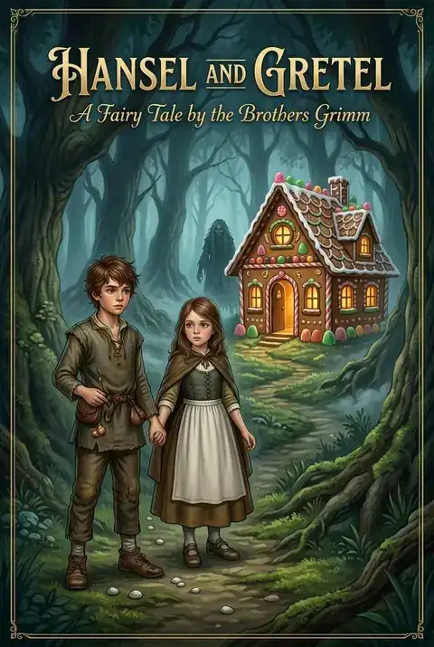
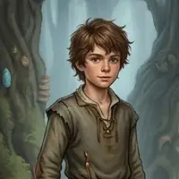
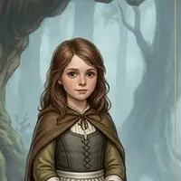
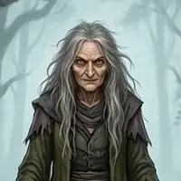
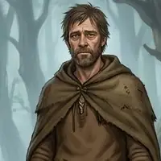
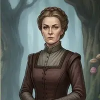

Hansel and Gretel
by Brothers Grimm
Fairy TaleFantasyEnglish
Driven into the forest by famine and a cruel stepmother, two children follow a trail of pebbles home, lose a trail of crumbs to the birds, and find a house made of sweets. Behind its sugar windows waits a witch, and only courage and quick thinking can save them.
6 chapters. Illustrated adaptation in 6 chapters.
Table of Contents
Dramatis Personae
-

Hansel The clever brother who leaves a trail -

Gretel His brave little sister -

The Witch The wicked owner of the sweet house -

The Woodcutter The poor, grieving father -

The Stepmother The hard-hearted wife who plans to abandon the children
Chapters here are formatted for reading convenience from the authoritative edition.